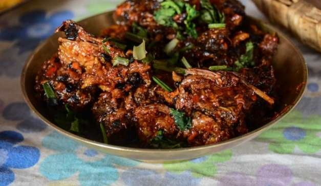

CHOILA
Also a part of the extensive Newari cuisine, this food in Nepal is a spicy one made with water buffalo meat. There are also other variants of Choila that use duck meat or normal meat. This is a hot and spicy savoury dish served with rice flakes. This is also a part of the Samay Baji and is a very famous dish during festivities.

A popular Newari food, buff choila, is loved by everyone. It is a famous non-veg food in Nepal, especially in the Newari community. It is served at Newari party with beaten rice, black-eyed beans, potato pickle, cooked vegetables, and many other traditional Newari items.
There are varieties of choila: buff choila, chicken choila, and veg choila. Veg choila is made with soya chunks. Veg choila doesn’t have a meaty taste, but it has a choila-like flavor.
Every Newari house has its own choila recipe. The process of making choila can slightly differ. Though the recipe for making choila may be different, but every recipe tastes as good as others.
This choila recipe is quite easy to make. You don’t need a lot of ingredients to make choila, just the right technique can help in making mouthwatering choila.To watch full recipe click to Cholia Recipe